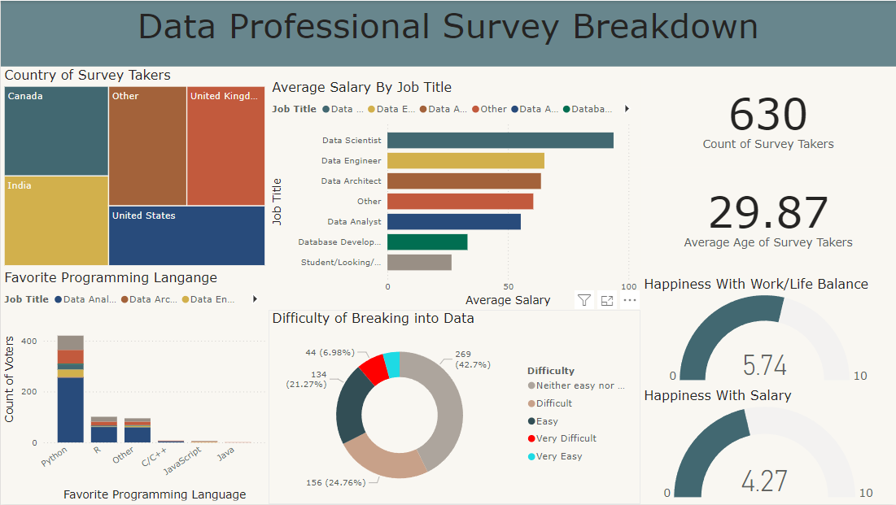

In this project, I cleaned and prepared a Nashville real estate dataset for analysis using SQL. The dataset contained inconsistencies such as missing values, duplicate records, and formatting issues. Key steps included standardizing address formats, removing duplicates, filling in missing data, and splitting concatenated fields (e.g., address components).
After cleaning, the dataset was optimized for more accurate insights and reporting on Nashville’s real estate trends.


This project focuses on analyzing a comprehensive COVID-19 dataset using SQL Server. By performing SQL queries and data exploration techniques, I extracted insights on global case trends, mortality rates, and recovery rates over time.
The project summarizes infection counts by country, identifying peaks in cases, and visualizing key metrics to understand the pandemic's impact.

This Tableau project is designed to assist Airbnb hosts in optimizing their rental pricing and maximizing profits.
By analyzing comprehensive Airbnb data, the project provides valuable insights into factors influencing rental profitability.
This project involves web scraping Amazon to collect product information such as titles, prices, ratings, and availability. Using Python, BeautifulSoup, and requests,
I’ve automated the extraction of data for product analysis and pricing trends, ensuring the script navigates dynamic content and handles anti-bot measures.

I analyzed survey data using Power BI to uncover key trends and insights about the experiences and preferences of professionals in the tech fields.
The survey captured information from respondents across various countries, focusing on their favorite programming languages, job titles, average salaries, and work-life balance.

This project showcases the full pipeline of custom dataset preparation, annotation, and utilizes a convolutional neural network (CNN) to learn features from facial data using Python and TensorFlow.
The goal is to accurately detect human faces in real-time and currently the model has an accuracy rate of 98.63%